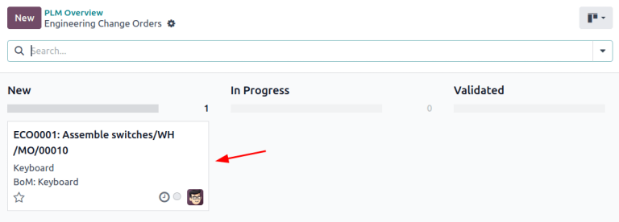

Órdenes de cambio de ingeniería¶
Utilice las órdenes de cambio de ingeniería (ECO) para monitorear, implementar y quitar los cambios realizados a productos y listas de materiales.
Estas son tres formas en las que puede crear órdenes de cambio de ingeniería:
si es un operador y desde la vista de tableta de una operación.
automáticamente desde retroalimentación que haya enviado al alias de correo electrónico del tipo de ECO.
Crear una ECO¶
Para crear una |orden de cambio de ingeniería (ECO, por sus siglas en inglés)| lo primero que tiene que hacer es ir a la aplicación PLM. Después, seleccione la tarjeta de tipo de ECO que se usará para monitorear el progreso de cambio. En la página Órdenes de cambio de ingeniería, haga clic en el botón Nuevo que se encuentra en la esquina superior izquierda.
Nota
Aprenda a crear nuevos tipos de ECO para categorizar y organizar órdenes de cambio. De esta manera, los empleados solo verán las ECO que se relacionan a sus responsabilidades, no importa si se trata de la introducción de un nuevo producto, actualizaciones específicas de las líneas de productos, o sobre el cumplimiento de la normativa.
En el formulario de ECO, llene los siguientes campos como se indica:
Descripción es un resumen de la mejora.
Tipo: especifica el tipo de proyecto ECO para organizar las ECO.
Aplicar en determina si la ECO cambia la Lista de materiales o Solo producto.
Producto indica el producto que se mejorará.
Lista de meteriales indica la |LdM| que se cambió. Si el producto indicado en el campo Producto tiene una |LdM| existente, este campo se llenará automáticamente. Si existen varias |listas de materiales| seleccione las opciones que quiera en el menú desplegable.
Empresa este campo se usa en bases de datos multiempresa. Especifique si el cambio se aplica a productos de una empresa en específico, o déjelo en blanco si el cambio se aplica a todas las empresas.
Responsable es la persona a cargo de la ECO. (Opcional)
Válida desde este campo especifica cuándo empieza a ser válida la |orden de cambio de ingeniería|. Si se elige Lo antes posible significa que la |orden de cambio de ingeniería| se aplicará a la |lista de materiales| en producción tan pronto como un usuario autorizado aplique los cambios.
Por otro lado, si selecciona En fecha y especifica una fecha, tendrá una fecha con la que será más fácil monitorear el historial de versiones de la |lista de materiales|, y la fecha específica de la |lista de materiales|, que se usan para producción.
Asignamos |etiquetas| a ECO para denotar la prioridad y organizarlas. Para crear una etiqueta nueva, escriba el nombre en el campo y seleccione Crear desde el menú desplegable. Esto es opcional.
Después de completar el formulario de la orden de cambio de ingeniería, haga clic en el botón Iniciar revisión para comenzar a implementar los cambios.
Al hacer clic en Iniciar revisión, ocurrirán tres acciones:
Aparecerá el botón inteligente Documentos, allí se almacenarán los archivos importantes de la lista de materiales.
Se almacena una copia de la |lista de materiales| de producción en el nuevo botón inteligente Revision de la |orden de cambio de ingeniería|. También se asigna el siguiente número de versión disponible (por ejemplo,
V2,V3, …) para realizar un seguimiento de todas las versiones de la |lista de materiales|.Las etapas de la |orden de cambio de ingeniería| tipo se muestran en la esquina superior derecha de la |orden de cambio de ingeniería|.
Nota
El botón inteligente Revisión estará disponible solo si selecciona la opción lista de materiales en el campo aplicar en, y se ha hecho clic en el botón Comenzar revisión.

Cambio de componentes¶
Si desea modificar los componentes de una |lista de materiales|, haga clic en el botón inteligente Revisión en una |orden de cambio de ingeniería| para acceder a la nueva versión de la |LdM|. Odoo puede diferenciar la versión de no producción de la versión actual al marcar la versión de prueba con una etiqueta grande con la leyenda archivado.
Example
Después de hacer clic en el botón Comenzar revisión de una |orden de cambio de ingeniería| para el producto, [D_0045 Stool], realice cambios en la |lista de materiales| del producto al hacer clic en el botón inteligente Revisión. Cuando lo haga se abrirá la lista de materiales archivada, marcada con una etiqueta roja con la leyenda archivado.

Modifique la lista de componentes de la nueva |LdM|, para esto vaya a la pestaña Componentes y cambie la cantidad de los componentes existentes, puede añadir nuevos componentes al hacer clic en el botón añadir una línea, y puede eliminar componentes con el icono 🗑️ (papelera).
Example
En la versión dos de la |LdM| para el teclado, se redujeron las cantidades de componentes y se añadió un nuevo componente llamado estabilizadores.

Comparar cambios¶
Una vez completados los cambios, vaya de nuevo a la |orden de cambio de ingeniería| haciendo clic en ECO00X en las migas de pan situadas en la esquina superior izquierda. En el formulario de la |orden de cambio de ingeniería|, podrá ver una nueva pestaña llamada Cambios en LdM que muestra las diferencias entre la |LdM| actual y la nueva versión.
El texto azul indica los nuevos componentes añadidos a la |LdM| revisada que no están en la |LdM| de producción. El texto negro representa las actualizaciones compartidas en ambas |listas de materiales|, mientras que el texto rojo indica componentes eliminados en la |LdM| revisada.
Los cambios y las pruebas se encapsulan en la |LdM| revisada, y no afectan a la |LdM| utilizada en producción. Al menos hasta que se apliquen los cambios.
Example
Consulte el resumen de las diferencias entre las |listas de materiales| del teclado actuales y revisadas en la pestaña Cambios en LdM de la |orden de cambio de ingeniería|.

Cambio de operaciones¶
Si desea modificar las operaciones de una |LdM|, haga clic en el botón inteligente Revisión de una |orden de cambio de ingeniería| para acceder a la nueva versión archivada de la |LdM|.
En la nueva versión de la |lista de materiales|, cambie a la pestaña operaciones para ver y editar las operaciones de |LdM|. Para realizar cambios, seleccione cada operación, esto abrirá la ventana emergente Abrir: operaciones correspondiente.
Nota
La pestaña operaciones no está disponible de forma predeterminada. Para activarla, vaya a la aplicación , y marque la casilla Órdenes de trabajo.
Realice cambios en cualquiera de los campos de la ventana emergente Abrir: operaciones y, a continuación, haga clic en Guardar.
Cree nuevas operaciones al hacer clic en el botón Agregar línea, y elimine nuevas operaciones con el botón Archivar operación.
Comparar cambios¶
Una vez completados los cambios, haga clic en ECO00X en las migas de pan situadas en la esquina superior izquierda para ir de nuevo a la |orden de cambio de ingeniería|.
En el formulario de la |orden de cambio de ingeniería| podrá ver una nueva pestaña Cambios de operación muestra las diferencias entre la |LdM| de producción actual y la nueva versión.
El texto azul indica las nuevas operaciones añadidas a la |LdM| revisada que aún no existen en la |LdM| de producción. El texto negro representa actualizaciones compartidas por ambas |listas de materiales|, mientras que el texto rojo indica las operaciones eliminadas en la |LdM| revisada.
Las modificaciones de la |LdM| en una |orden de cambio de ingeniería| no afectarán a la |LdM| utilizada en producción. Es decir, hasta que se apliquen los cambios.
En la pestaña Cambios de operación, cada fila de detalles, debajo de las columnas de la tabla, refleja la siguiente información:
Operación: Nombre de la operación que se modificó.
Paso: especifica el punto de control de calidad, visible cuando la operación incluye instrucciones detalladas.
Nota
Para revisar las instrucciones, haga clic en la línea de la operación en la pestaña Operaciones de una |LdM|. A continuación, en la ventana emergente Abrir: operaciones, busque el botón inteligente Instrucciones que aparece en la parte superior.
Example
El ensamblaje Operación incluye 10 instrucciones detalladas para completarlo.

Tipo de paso detalla el tipo de control de calidad para más instrucciones en la operación.
Tipo corresponde al texto de color para especificar en qué difiere la |LdM| revisada de la |LdM| de producción. Los tipos de cambio de operación pueden ser añadir, eliminar o actualizar.
Centro de trabajo: especifica el centro de trabajo en el que se realiza la operación.
Cambio manual de duración se refiere al cambio en el campo Duración predeterminada de la ventana emergente Abrir: operaciones, que especifica el tiempo previsto para completar la operación.
Example
La pestaña cambios de operación compara la producción de la |LdM| con la |LdM| revisada en la |orden de cambio de ingeniería|.
En la |LdM| revisada, se añade una nueva Operación de ensamblaje en la línea de ensamblaje 1 del centro de trabajo. Además, la duración prevista de la operación es de 20.00 minutos, tal y como se especifica en la etiqueta Cambio manual de duración.
Para completar la operación de ensamblaje, se añaden dos instrucciones de puntos de control de calidad:
El primero es el paso
QCP00039, un tipo de paso para registrar la producción de componentes.El segundo paso es
QCP00034, un tipo de paso deinstruccionesque proporciona detalles adicionales de ensamblaje.

Aplicar cambios¶
Después de verificar los cambios, mueva la |orden de cambio de ingeniería| a una etapa de verificación, estas etapas requieren aprobación antes de que los cambios revisados se puedan aplicar a la |orden de cambio de ingeniería| de producción.
Una vez que los aprobadores aceptan los cambios, verá el botón aplicar cambios. Haga clic en él y la |orden de cambio de ingeniería| pasará automáticamente a la fase de cierre. Una vez que se aplican los cambios, se archivará la |LdM| de producción original, y la |LdM| revisada se convertirá en la nueva |LdM| de producción.
Verificar cambios¶
Puede verificar que los cambios están activos desde la |orden de cambio de ingeniería| en la que hizo clic en el botón aplicar cambios. Vuelva a la |LdM| revisada haciendo clic en el botón inteligente Revisión.
Ya no verá la etiqueta roja con la leyenda archivado en la |LdM| revisada.
Si desea comprobar los cambios, vaya a la aplicación y seleccione el producto para ver la |LdM| de producción.
A continuación, en el formulario del producto, haga clic en el botón inteligente lista de materiales y seleccione la |LdM| de la lista. En la pestaña Varios de la |LdM|, el campo Versión se actualiza para coincidir con el número de versión que aparece en el botón inteligente Revisión de la última |orden de cambio de ingeniería|.
Example
Después de aplicar los cambios de la |orden de cambio de ingeniería| para el teclado, vea la versión de la |LdM| actual del teclado en la pestaña varios. Aquí, el número de versión se ha actualizado a 2, que coincide con la V2 que aparece en el botón inteligente Revisión de la |orden de cambio de ingeniería|.

Crear una orden de cambio de ingeniería desde la vista de tableta¶
Los operadores pueden sugerir directamente instrucciones de operación más claras, mientras ejecutan órdenes de fabricación en la aplicación Fabricación.
Si desea crear órdenes de fabricación de este modo, vaya a la aplicación . A continuación, seleccione la orden de fabricación) deseada y vaya a la pestaña órdenes de trabajo. Después, haga clic en el icono 📱 (teléfono móvil) de la orden de trabajo deseada para abrir la vista de tableta de la operación.
Importante
Solo está disponible el icono 📱 (teléfono móvil) en las órdenes de fabricación con estado confirmado o en progreso.
A continuación, añada un paso de instrucción, haga clic en el icono ☰ (tres líneas horizontales) en la vista de tableta de una operación. Al hacerlo, se abrirá el menú de elementos de acción para una orden de fabricación. Después haga clic en el botón añadir un paso.

Si hace clic en el botón, aparecerá la ventana emergente añadir un paso, donde se envían los cambios propuestos.
En el campo Título, escriba una breve descripción del paso. Luego, en el campo de texto Instrucción, escriba las instrucciones del paso con más detalle. De manera opcional, puede agregar una imagen en el campo Documento. Una vez que está completo, haga clic en el botón Proponer cambios.
Example
Para proponer una revisión adicional para componentes rotos, escriba los detalles en la ventana emergente de Agregar un paso. Al hacerlo, se creará un punto de control de calidad con instrucciones que se explicarán más a detalle en la siguiente sección.

Con base en las entradas de la ventana emergente de Agregar un paso, se creará una orden para cambio de ingeniería con la siguiente información:
La Descripción es el nombre de la operación, seguido del número de referencia de la orden de fabricación.
El Tipo de la orden para cambio de ingeniería se le asigna automáticamente a los
Cambios en la LdM.Los campos de Producto y Lista de materiales se completan de manera automática de acuerdo con la LdM que se utilizó en la orden de fabricación.
El Responsable es el operador que envió la retroalimentación.
Ver orden para cambio de ingeniería¶
Para revisar los cambios propuestos, vaya a la . En la tarjeta Actualizaciones de la lista de materiales, el botón X Cambios de ingeniería representa la cantidad de cambios operacionales que se crearon dese la vista de tableta.
Haga clic en el botón de X Cambios de ingeniería para abrir la vista kanban para ver el tipo de orden para cambio de ingeniería. Para ver la sugerencia, seleccione una orden para cambio de ingeniería en etapa de Nuevo.
En la orden para cambio de ingeniería, aparecerá un resumen de los cambios propuestos en la pestaña Cambios de operación. Haga clic en el botón inteligente de Revisión para ir a la lista de materiales editada y revise los cambios propuestos con más detalle.
Example
Un operador sugirió otra revisión para componentes rotos agregando un paso desde la vista de tableta al realizar la operación Ensamblaje de botones para la orden de fabricación WH/MO/00010 para el producto Teclado.
Esta orden para cambio de ingeniería se puede ver en el tipo Actualizaciones de la lista de materiales en la . De manera predeterminada, las órdenes para cambios de ingeniería que se crean desde la vista de tableta se generan en etapa de Nuevo.
El campo Responsable se le asigna al operador que hizo la sugerencia, lo cual le permite al empleado encargado de revisar la orden para cambio de ingeniería obtener más información directamente de la persona que propuso el cambio.
En la LdM actualizada, vaya a la pestaña Operaciones y seleccione el icono ☰ (tres líneas horizontales). Al hacerlo, aparecerá una lista de Pasos a seguir para la operación con la instrucción recientemente agregada llamada Sugerencia de nuevo paso:, seguida del título que puso el usuario. Haga clic en la línea para ver los cambios sugeridos.
En el formulario de punto de control de calidad asegúrese de llenar los siguientes campos para que los operadores cuenten con instrucciones detalladas:
Título: cambie el nombre para dar una descripción concisa de la nueva instrucción.
Control por: utilice el menú desplegable para determinar si esta instruccion aplica de manera general para todo el Producto, solo para esta Operación en específico o para una Cantidad particular del producto.
Tipo: categoriza el tipo de punto de control. Desde el menú desplegable, seleccione las Instrucciones para aclararle las instrucciones al trabajador. Para que el trabajador pueda ingresar información, seleccione Tomar una foto, Registrar materiales consumidos, Imprimir etiqueta, u otras opciones de control de calidad.
Una vez que el punto de calidad esté configurado, regrese a la lista de Pasos usando las migas de pan. Finalmente, arrastre el último elemento de la línea del control de calidad a su orden de instrucciones correspondiente.
Example
Arrastre y reordene la instrucción Revisar si hay botones descompuestos haciendo clic y arrastrando su icono de «6 puntos» para moverlo del final a la segunda posición.